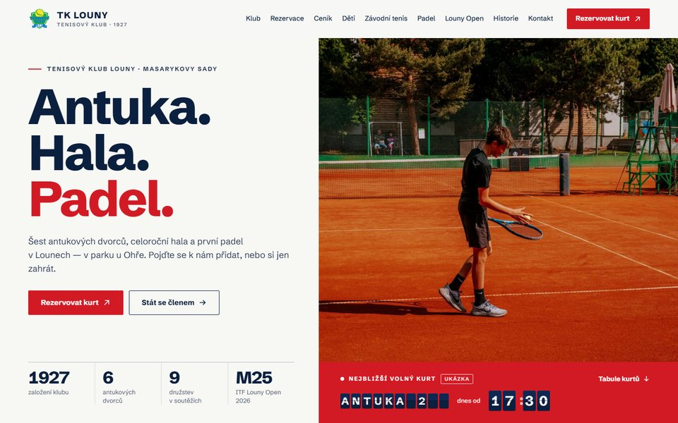
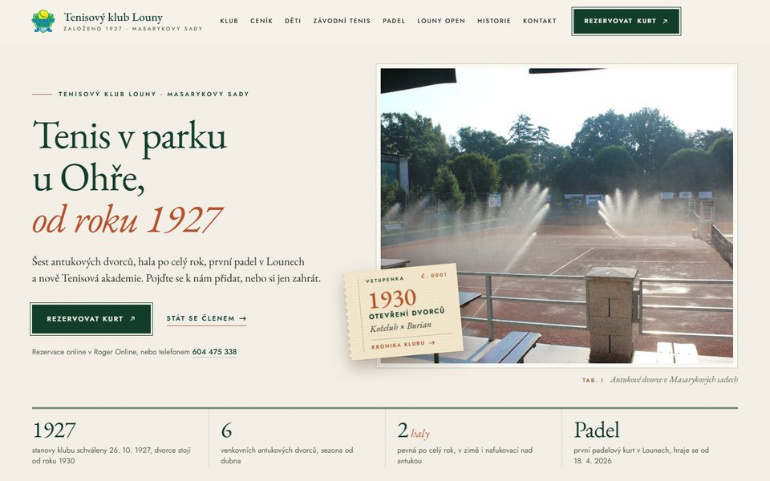
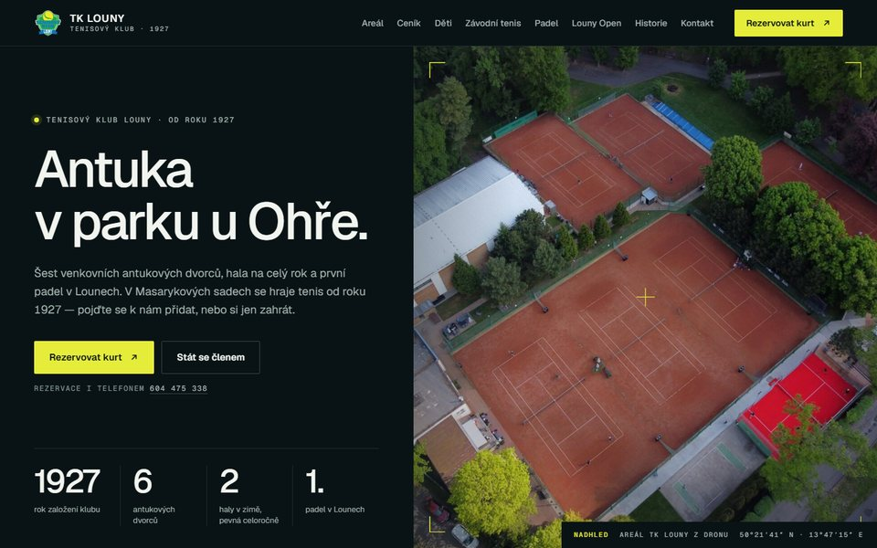

Tři návrhy úvodní stránky

Červená
01 · Světlá moderní
Červená z padelového kurtu a hluboká modrá ve velkých sebevědomých plochách, hodně bílé a čáry kurtu. Hlavní nápad: tabule kurtů, ze které se jedním klepnutím rezervuje.
Otevřít návrh
Almanach
02 · Světlá klasická
Slonová kost, lahvová zeleň z erbu a antuka. Klub s tradicí od roku 1927 vysázený jako almanach. Hlavní nápad: vstupenka na rok 1930, kdy dvorce otevřel Koželuh s Burianem.
Otevřít návrh
Nadhled
03 · Tmavá
Noční tmavá, antuka a žlutá z míčku v erbu. Areál z dronu jako podpis webu. Hlavní nápad: interaktivní plánek areálu, ve kterém si návštěvník projde dvorce, haly, padel i klubovnu.
Otevřít návrhCo je v náhledech ukázkové
- Texty, ceny, trenéři, historie a fotky jsou ze současného webu klubu, jen učesané a znovu vysázené.
- Aktuality jsou sestavené z termínové listiny 2026 a z klubových zpráv.
- Obsazenost kurtů je zatím ukázková. Na ostrém webu se napojí na rezervační systém Roger.
- Plánek areálu vychází z OpenStreetMap, padelový kurt je v něm doplněný orientačně.
Co budeme potřebovat od klubu
- Výběr návrhu, případně co z kterého převzít.
- Ceník na zimní sezonu 2026/27 (pevná a nafukovací hala) a potvrzení ceny venkovních dvorců.
- Fotky v plném rozlišení: originály z dronu, z Louny Open a nové portréty trenérů.
- Závodní tenis: jak dopadlo áčko v 1. lize 2026 a složení družstev pro rok 2027.
- Kdo bude psát aktuality. Ostrý web dostane jednoduchou administraci.